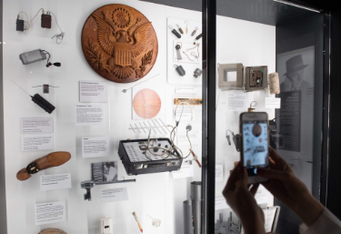

Receive your cover identity and prepare to test your spy skills throughout the Museum on your UNDERCOVER MISSION.
Your mission begins here at the Briefing Center. This is where you will receive a new cover identity, an RFID-enabled badge and prepare to test your spy skills throughout the Museum in an immersive UNDERCOVER MISSION.
Do you have it what takes to be spy? The briefing film is your introduction to a hidden world of covert missions that influence battles, sway governments, and change lives. Listen closely. Do you recognize the voice of the narrator?
Come face to face with spies and spymasters, gadget makers, scientists, and engineers from past and present. Take a closer look at the hundreds of imaginative inventions used to steal secrets.
Visitors explore six stories about real spies reflecting various periods in history, places and spy types. Featured in the profiles are: Morten Storm, Dmitiri Bystrolyotov, Mata Hari, Sir Francis Walsingham, James Lafayette, Mosab Yousef and Gonen ben Itzhak.
When spies need to plant a bug, secretly snap a photo, communicate covertly, or don a disguise, they turn to Technical Operations or Tech Ops. Meet the inventors, engineers, scientists, computer whizzes, artists, and tinkerers who fuse imagination and technical know-how to create the devices agents and handlers need to overcome challenges in the field.
The gadgets featured in this exhibit cover five key areas: covert communications, surveillance and counter-surveillance, escape and evasion, disguise, and secret entry.
Some places are too dangerous or remote to send in spies. Some information is beyond the reach of human senses. That’s when scientists, engineers, IT specialists, and researchers must devise innovative solutions—new ways to intercept messages, conduct surveillance, or sniff out secrets. Featured: Signals Intel (SIGINT), Imagery Intel (IMINT), Measures & Signature Intel (MASINT) and Open Source Intel (OSINT).
How does secret information get turned into useful intelligence? Try your hand at code-cracking, think like an analyst, and experience how decision-makers use intelligence.
From ancient devices to quantum computers, people have devised ingenious ways to hide the real meaning of messages.Cryptologists, meanwhile, try to crack these puzzles. The success or failure of codemakers and breakers has reshaped battles and changed the course of history.
How do analysts make sense of collected intelligence and assess issues? Visitors are challenged to think like an analyst by exploring three stories highlighting different types of intelligence problems.
Experience Red Teaming, a dramatic virrtual interactive in which visitors participate in an exercise that CIA analysts used in the hunt for Osama bin Laden.
Discover the age-old techniques leaders use to secretly influence events abroad. Find out about covert mission failures and successes – from sabotage to lethal action.
Disrupt. Delay. Destroy. What is the potential and the danger in sabotage operations? This exhibit includes stories about Operation Gunnerside, the WWII Allied effort to prevent Germans from building a nuclear bomb, and Opération Satanique, an attempt by French Intelligence to disable Greenpeace’s flagship, the Rainbow Warrior. Visitors also encounter ninjas, the WWII submarine the Sleeping Beauty, an array of sabotage artifacts, and can avoid detection by crawling through an Air Duct.
A magician’s misdirection. A forger’s fakery. A poker player’s bluff. Spotlight classic deception techniques used to make a force appear stronger than its enemy, or to hide in plain sight—strategies still used today.
Targeted killing. Wet jobs. Assassinations. Eliminations. Learn the deadly plots in which governments eliminate spies, operatives, dissidents, or enemies of the state.
Learn about the 1960s failed CIA Bay of Pigs operation and the successful 1980s Operation Cyclone in Afghanistan.
How can a nation secretly undermine a rival’s political or economic system? This exhibit covers the Sidney Reilly and Robert Lockhart plot to overthrow the Bolshevik regime and the Nazis’ Operation Bernhard to wreck Britain’s economy during WWII through counterfeit money.
What is fake news? This exhibit includes examples of government attempts to manipulate public opinion across history, from Ancient Egypt to the 2016 US presidential election.
How do spy agencies undertake risky missions to rescue hostages or bring defectors to safety? Here, visitors can discover the story of the Canadian Caper (ARGO) from the CIA officer who carried it out: Tony Mendez.
How has spying shaped the world? Explore stories from the American Revolution to 21st century cyber warfare. What happens when secrets are kept…and revealed? Hear what real spies think about on-screen spies.
In this gallery, seven exhibits illustrate the impact of intelligence on history, including successes and failures, new tech tools, and the tension in balancing the needs for secrecy and liberty.
In this letter, General George Washington offers Nathaniel Sackett $50 a month (more than $1,000 today) to spy for the Continental Army, plus another $500 to set up a spy network.
Discover the stories about when intelligence has helped shaped the world in which we live, and explore how spy agencies respond to threats all nations face. Issues addressed: How to strike the right balance between security and freedom, and between secrecy and openness?
Meet America’s first spymaster…George Washington and uncover how he used the power of espionage to outsmart and outmaneuver and win the Revolution.
From OSS to CIA - Meet the spies, saboteurs, commandos, propagandists, and analysts who aided in Allied efforts on and off the battlefield.
This exhibit explores the tensions between the secrecy necessary for spy agencies to operate and the openness necessary for effective democracy. The stories featured cover the trial and execution of Julius and Ethel Rosenberg as well as to 21st century leaker Edward Snowden.
In 1941 and 2001, attacks on the US caught leaders off guard. Japan’s strike at Pearl Harbor and the September 11 terror attacks. This exhibit compares the two events and illustrate some of the many challenges intelligence analysts face in delivering clear warnings that leaders can act on—and show the consequences of getting it wrong.
You may know their names—but you probably don’t know that they were also spies. This exhibit reveals the unexpected spy stories of people from the Civil War (such as Harriet Tubman), WWII (such as Moe Berg), the Cold War (such as Harpo Marx), and today.
From propaganda to sabotage, from economic interference to political meddling, the brave new world of cyber operations let intelligence agencies gather information or disrupt vital systems swiftly, safely, and remotely.

Few people live the life of a spy—leaving a gap in the public’s understanding of real intelligence work that has been filled by popular culture for almost a hundred years. Here, visitors can see a sample of spy toys and games from past to present and hear intelligence officers comment on the reality and fiction in spy movies.
How do spy agencies protect against threats at home? What happens when they go too far? Delve into spy tales from Renaissance Venice to Cold War Berlin.
All countries experience threats—real, perceived, or contrived. But how do they respond to these threats? This gallery explores these responses—from interrogation to surveillance. How much protection is enough? How much is too much? The answer can be the difference between citizens living in security or living in an oppressive security state. Explore this uncertain world.
What happens when intelligence insiders pose a threat to their own countries’ interests? Hear about some of the 20th century’s most notorious traitors: the US’ Aldrich Ames, Robert Hanssen, and John Walker, Britain’s Kim Philby/Cambridge Five, and the Soviet Union’s Adolf Tolkachev. Discover how these men were caught—or not caught.
Terrorism is not a new threat. Countries around the world have experienced terrorism where we live (the Palmer Raids of the 1920s), work (the 1995 Oklahoma bombing), and play (the 1972 Munich Olympics). Find out how intel agencies have responded to these events and have thwarted other attacks – such as the plot of the Toronto 18.
Visitors experience an immersive environment contrasting West and East Berlin during the Cold War. Sneak into East Berlin, discover the tools and techniques of the Stasi in a hotel room (filled with concealment and surveillance devices), an interrogation room (where visitors can assess each other’s lying “tells”), and a Stasi office.
Are there spies living as your neighbors? Discover the story of the Russian Ten—spies who lived covertly, many under assumed identities, in the United States for many years, and how the FBI watched, waited, and finally arrested them as part of Operation Ghost Story.
Discover the products you can find in your home that have a hidden spy story. From ancient times to today, governments steal secrets to gain a financial and commercial advantage. This exhibit explores one of the earliest counterintelligence systems in Renaissance Venice, as well as how Western spies stole the secrets of silk, porcelain, and tea from China—centuries before China now leads the field in stealing economic secrets from the West.
Receive your Undercover Mission conclusion and performance debrief that summarizes your top spy skills.
Now you know. You’ve pulled back the curtain, revealing extraordinary events and remarkable people often hidden in plain sight. In this realm of secrets and shadows, where deceptions are broadcast and truths concealed, only one thing is certain: Spying has shaped, and continues to shape, the world we live in.
